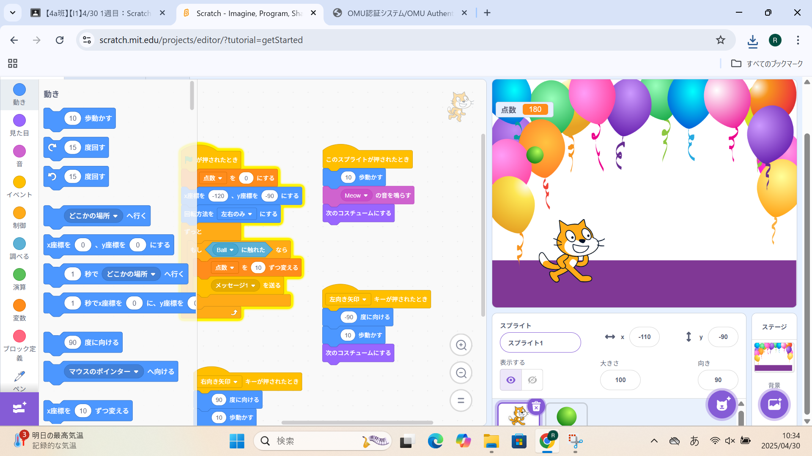

1週目のレポート ： 公大高専１年実習I-1
4a班09番 kouta
第1週目
1-1 サイエンスアート
1.内容
猫を動かしたり、角度を変えたりするプログラミングを練習したり、いろいろな指示を送る練習をした。
色をつけた線を動かして自分で考えた図形を作った。
2.感想
数字を書き換え画面上の猫を動かして二次元に図形を作成することは難しかったけど、
意外とどんな数字に変えてもきれいな模様が出来て非常に面白かった。
きれいな図形が出来てとても嬉しかったです。
1-2 ゲーム

1.内容
猫を動かして落ちてくるリンゴを拾うゲームを作って、そのリンゴの見た目や背景、猫の見た目を自分で考えたオリジナルのモノに変更した。
2.感想
まだ簡単なサイトを使ったプログラミングだったけど、教えてもらった操作を自分で応用してオリジナルのモノに変えるのはとても楽しかった。
どんどんと見た目を変えたり操作を変えたりすることが初めての体験でとても楽しかった。
1-3 ホームページ作成
私のホームページ
1.内容
githubにサインインして、使い方を学んだ。そして自分の自己紹介ホームページを開き、中身の例を自分で自分の自己紹介に変えた。
2.感想
ちょっとずつ難しくなってきて、ついていくのが難しくなってきたけど、しっかり聞いて自分で考えてやっていくのがとても楽しかった。
ホームページを自分で作るのが初めてだったので体験できてとても面白かった。
各ページへのリンク
1週目のレポート
2週目のレポート
3週目のレポート
私のホームページ